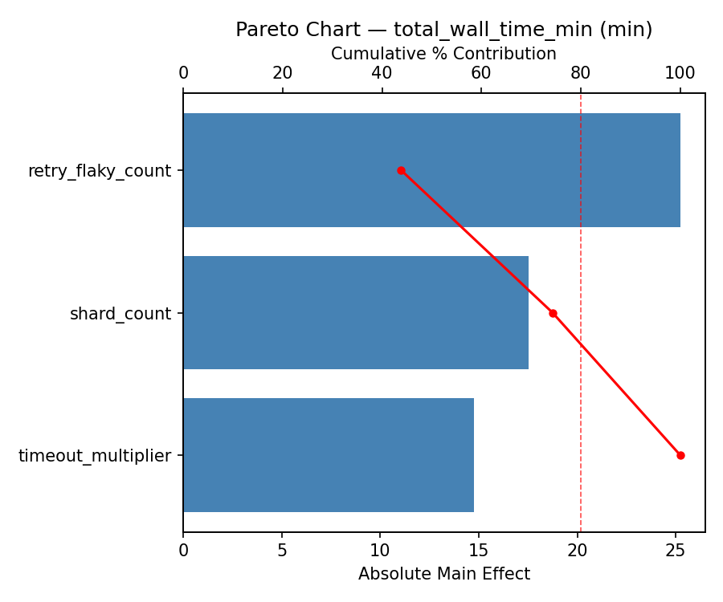
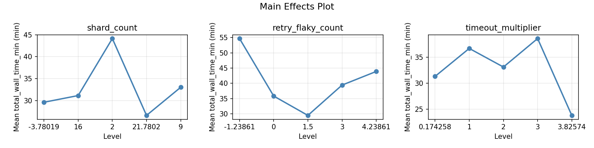
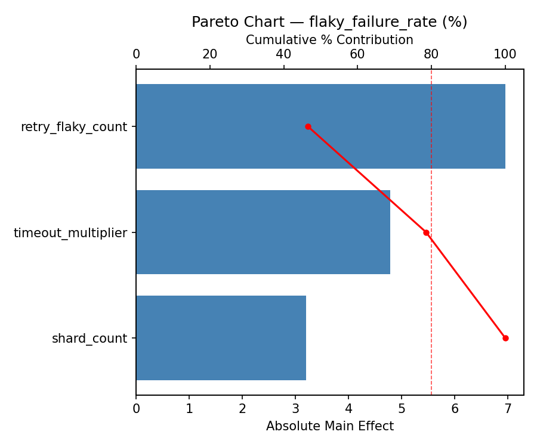
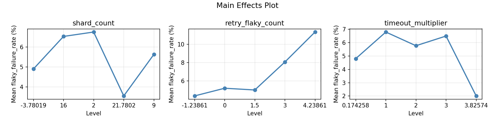
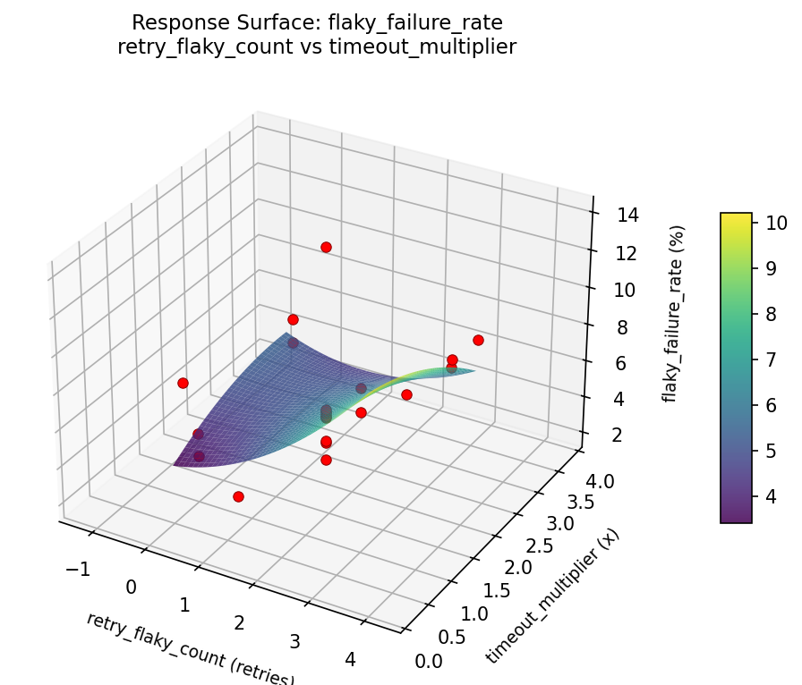
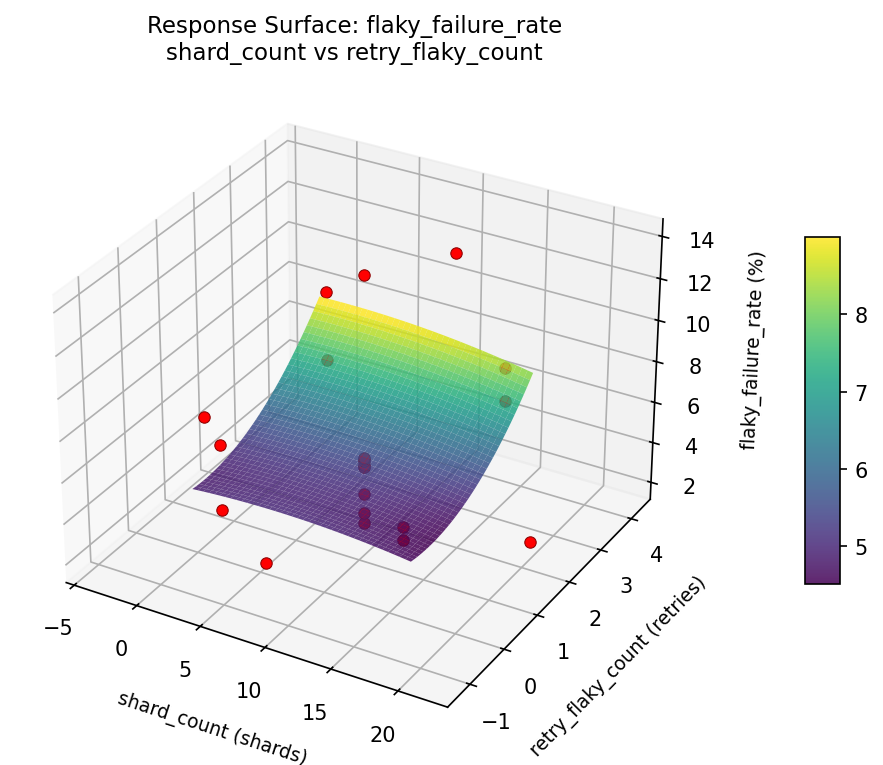
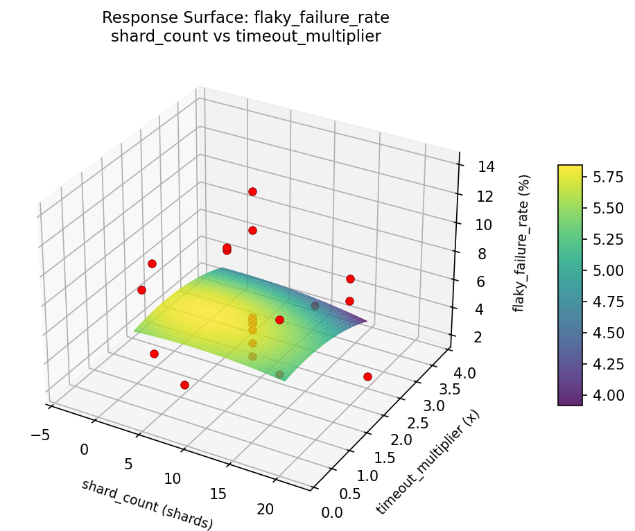
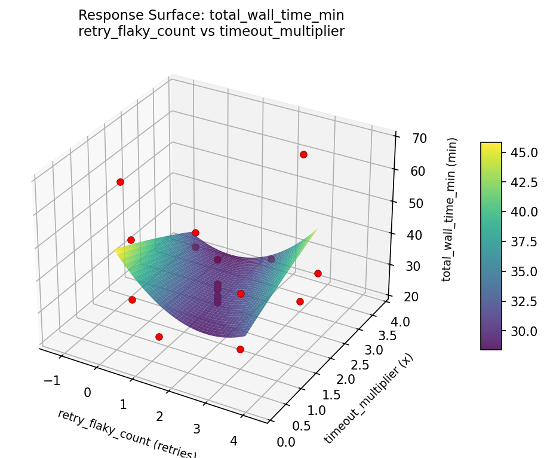
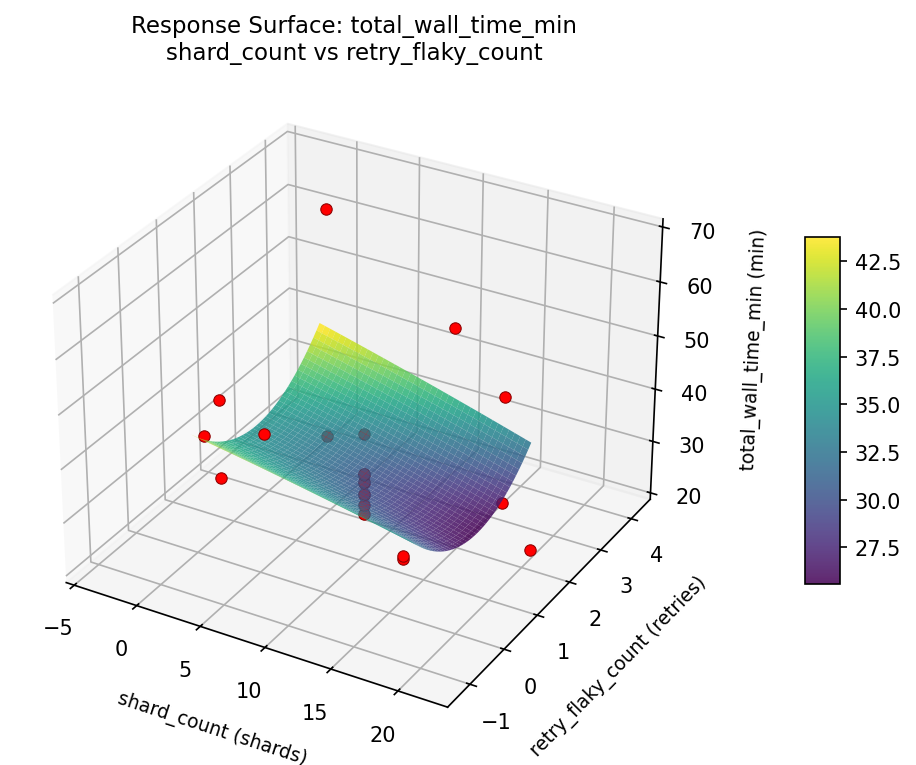
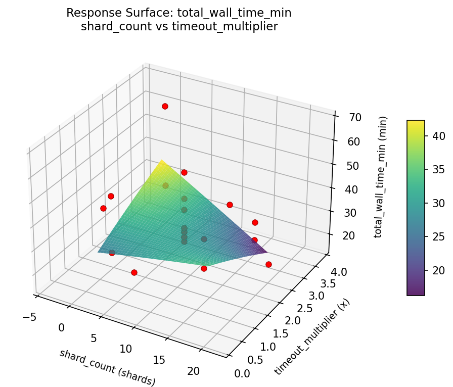

Experimental Setup
Factors
| Factor | Low | High | Unit |
|---|
shard_count | 2 | 16 | shards |
retry_flaky_count | 0 | 3 | retries |
timeout_multiplier | 1.0 | 3.0 | x |
Fixed: framework = pytest, test_count = 4500
Responses
| Response | Direction | Unit |
|---|
total_wall_time_min | ↓ minimize | min |
flaky_failure_rate | ↓ minimize | % |
Configuration
{
"metadata": {
"name": "Test Suite Sharding",
"description": "Central Composite design to optimize shard count, retry count, and timeout multiplier for wall time and flaky failures"
},
"factors": [
{
"name": "shard_count",
"levels": [
"2",
"16"
],
"type": "continuous",
"unit": "shards"
},
{
"name": "retry_flaky_count",
"levels": [
"0",
"3"
],
"type": "continuous",
"unit": "retries"
},
{
"name": "timeout_multiplier",
"levels": [
"1.0",
"3.0"
],
"type": "continuous",
"unit": "x"
}
],
"fixed_factors": {
"framework": "pytest",
"test_count": "4500"
},
"responses": [
{
"name": "total_wall_time_min",
"optimize": "minimize",
"unit": "min"
},
{
"name": "flaky_failure_rate",
"optimize": "minimize",
"unit": "%"
}
],
"settings": {
"operation": "central_composite",
"test_script": "use_cases/81_test_suite_sharding/sim.sh"
}
}
Experimental Matrix
The Central Composite Design produces 22 runs. Each row is one experiment with specific factor settings.
| Run | shard_count | retry_flaky_count | timeout_multiplier |
|---|
| 1 | 9 | 1.5 | 2 |
| 2 | 16 | 0 | 3 |
| 3 | 2 | 3 | 1 |
| 4 | 9 | 4.23861 | 2 |
| 5 | 9 | 1.5 | 2 |
| 6 | -3.78019 | 1.5 | 2 |
| 7 | 9 | 1.5 | 0.174258 |
| 8 | 9 | 1.5 | 2 |
| 9 | 16 | 3 | 1 |
| 10 | 21.7802 | 1.5 | 2 |
| 11 | 9 | 1.5 | 2 |
| 12 | 9 | -1.23861 | 2 |
| 13 | 9 | 1.5 | 2 |
| 14 | 2 | 0 | 3 |
| 15 | 9 | 1.5 | 2 |
| 16 | 16 | 0 | 1 |
| 17 | 9 | 1.5 | 3.82574 |
| 18 | 16 | 3 | 3 |
| 19 | 9 | 1.5 | 2 |
| 20 | 2 | 0 | 1 |
| 21 | 2 | 3 | 3 |
| 22 | 9 | 1.5 | 2 |
Step-by-Step Workflow
1
Preview the design
$ python doe.py info --config use_cases/81_test_suite_sharding/config.json
2
Generate the runner script
$ python doe.py generate --config use_cases/81_test_suite_sharding/config.json \
--output use_cases/81_test_suite_sharding/results/run.sh --seed 42
3
Execute the experiments
$ bash use_cases/81_test_suite_sharding/results/run.sh
4
Analyze results
$ python doe.py analyze --config use_cases/81_test_suite_sharding/config.json
5
Get optimization recommendations
$ python doe.py optimize --config use_cases/81_test_suite_sharding/config.json
6
Generate the HTML report
$ python doe.py report --config use_cases/81_test_suite_sharding/config.json \
--output use_cases/81_test_suite_sharding/results/report.html
Features Exercised
| Feature | Value |
|---|
| Design type | central_composite |
| Factor types | continuous (all 3) |
| Arg style | double-dash |
| Responses | 2 (total_wall_time_min ↓, flaky_failure_rate ↓) |
| Total runs | 22 |
Analysis Results
Generated from actual experiment runs using the DOE Helper Tool.
Response: total_wall_time_min
Top factors: timeout_multiplier (59.0%), shard_count (22.9%), retry_flaky_count (18.1%).
Pareto Chart

Main Effects Plot

Response: flaky_failure_rate
Top factors: shard_count (43.1%), timeout_multiplier (31.6%), retry_flaky_count (25.3%).
Pareto Chart

Main Effects Plot

Response Surface Plots
3D surfaces fitted with quadratic RSM. Red dots are observed data points.
flaky failure rate retry flaky count vs timeout multiplier

flaky failure rate shard count vs retry flaky count

flaky failure rate shard count vs timeout multiplier

total wall time min retry flaky count vs timeout multiplier

total wall time min shard count vs retry flaky count

total wall time min shard count vs timeout multiplier

Full Analysis Output
=== Main Effects: total_wall_time_min ===
Factor Effect Std Error % Contribution
--------------------------------------------------------------
timeout_multiplier 37.0167 2.3938 59.0%
shard_count 14.3500 2.3938 22.9%
retry_flaky_count 11.3500 2.3938 18.1%
=== Summary Statistics: total_wall_time_min ===
shard_count:
Level N Mean Std Min Max
------------------------------------------------------------
-3.78019 1 22.1000 0.0000 22.1000 22.1000
16 4 31.0000 6.3061 23.8000 39.1000
2 4 36.4500 12.1848 29.8000 54.7000
21.7802 1 25.1000 0.0000 25.1000 25.1000
9 12 36.3583 12.5638 25.5000 68.1000
retry_flaky_count:
Level N Mean Std Min Max
------------------------------------------------------------
-1.23861 1 25.5000 0.0000 25.5000 25.5000
0 4 30.6000 0.8756 29.7000 31.4000
1.5 12 35.7000 13.1343 22.1000 68.1000
3 4 36.8500 13.4622 23.8000 54.7000
4.23861 1 29.6000 0.0000 29.6000 29.6000
timeout_multiplier:
Level N Mean Std Min Max
------------------------------------------------------------
0.174258 1 68.1000 0.0000 68.1000 68.1000
1 4 32.5750 4.4079 29.8000 39.1000
2 12 31.0833 7.9111 22.1000 48.9000
3 4 34.8750 13.6045 23.8000 54.7000
3.82574 1 42.4000 0.0000 42.4000 42.4000
=== Main Effects: flaky_failure_rate ===
Factor Effect Std Error % Contribution
--------------------------------------------------------------
shard_count 6.1275 0.6133 43.1%
timeout_multiplier 4.4875 0.6133 31.6%
retry_flaky_count 3.5975 0.6133 25.3%
=== Summary Statistics: flaky_failure_rate ===
shard_count:
Level N Mean Std Min Max
------------------------------------------------------------
-3.78019 1 7.0600 0.0000 7.0600 7.0600
16 4 3.8125 1.8126 2.0100 5.5000
2 4 4.7650 0.2886 4.3800 5.0800
21.7802 1 9.9400 0.0000 9.9400 9.9400
9 12 6.4875 3.2929 3.4300 13.9500
retry_flaky_count:
Level N Mean Std Min Max
------------------------------------------------------------
-1.23861 1 4.8700 0.0000 4.8700 4.8700
0 4 5.0850 0.3458 4.8000 5.5000
1.5 12 7.0900 3.3307 3.4300 13.9500
3 4 3.4925 1.4709 2.0100 5.0800
4.23861 1 4.9000 0.0000 4.9000 4.9000
timeout_multiplier:
Level N Mean Std Min Max
------------------------------------------------------------
0.174258 1 6.6200 0.0000 6.6200 6.6200
1 4 4.4050 1.2830 2.5000 5.2400
2 12 6.6308 3.3917 3.4300 13.9500
3 4 4.1725 1.5139 2.0100 5.5000
3.82574 1 8.6600 0.0000 8.6600 8.6600
Optimization Recommendations
=== Optimization: total_wall_time_min ===
Direction: minimize
Best observed run: #16
shard_count = 9
retry_flaky_count = 1.5
timeout_multiplier = 3.82574
Value: 22.1
RSM Model (linear, R² = 0.2044, Adj R² = 0.0718):
Coefficients:
intercept +34.2409
shard_count +0.7551
retry_flaky_count -4.7916
timeout_multiplier -3.6559
RSM Model (quadratic, R² = 0.2513, Adj R² = -0.3101):
Coefficients:
intercept +33.0343
shard_count +0.7551
retry_flaky_count -4.7916
timeout_multiplier -3.6559
shard_count*retry_flaky_count +0.7625
shard_count*timeout_multiplier -0.4875
retry_flaky_count*timeout_multiplier -1.7375
shard_count^2 +0.2333
retry_flaky_count^2 +2.0483
timeout_multiplier^2 -0.4717
Curvature analysis:
retry_flaky_count coef=+2.0483 convex (has a minimum)
timeout_multiplier coef=-0.4717 concave (has a maximum)
shard_count coef=+0.2333 convex (has a minimum)
Notable interactions:
retry_flaky_count*timeout_multiplier coef=-1.7375 (antagonistic)
shard_count*retry_flaky_count coef=+0.7625 (synergistic)
shard_count*timeout_multiplier coef=-0.4875 (antagonistic)
Predicted optimum (from linear model):
shard_count = 16
retry_flaky_count = 0
timeout_multiplier = 1
Predicted value: 43.4435
Model quality: Weak fit — consider adding center points or using a different design.
Factor importance:
1. retry_flaky_count (effect: 42.6, contribution: 47.0%)
2. timeout_multiplier (effect: 32.6, contribution: 36.0%)
3. shard_count (effect: 15.5, contribution: 17.1%)
=== Optimization: flaky_failure_rate ===
Direction: minimize
Best observed run: #9
shard_count = 2
retry_flaky_count = 0
timeout_multiplier = 1
Value: 2.01
RSM Model (linear, R² = 0.0588, Adj R² = -0.0980):
Coefficients:
intercept +5.8709
shard_count +0.3698
retry_flaky_count -0.7381
timeout_multiplier -0.1239
RSM Model (quadratic, R² = 0.2471, Adj R² = -0.3176):
Coefficients:
intercept +6.1763
shard_count +0.3698
retry_flaky_count -0.7381
timeout_multiplier -0.1239
shard_count*retry_flaky_count -0.8213
shard_count*timeout_multiplier -1.7412
retry_flaky_count*timeout_multiplier +0.4813
shard_count^2 -0.1832
retry_flaky_count^2 -0.1337
timeout_multiplier^2 -0.1412
Curvature analysis:
shard_count coef=-0.1832 concave (has a maximum)
timeout_multiplier coef=-0.1412 concave (has a maximum)
retry_flaky_count coef=-0.1337 concave (has a maximum)
Notable interactions:
shard_count*timeout_multiplier coef=-1.7412 (antagonistic)
shard_count*retry_flaky_count coef=-0.8213 (antagonistic)
retry_flaky_count*timeout_multiplier coef=+0.4813 (synergistic)
Predicted optimum (from linear model):
shard_count = 9
retry_flaky_count = -1.23861
timeout_multiplier = 2
Predicted value: 7.2184
Model quality: Weak fit — consider adding center points or using a different design.
Factor importance:
1. shard_count (effect: 6.2, contribution: 57.3%)
2. timeout_multiplier (effect: 2.7, contribution: 24.9%)
3. retry_flaky_count (effect: 1.9, contribution: 17.7%)